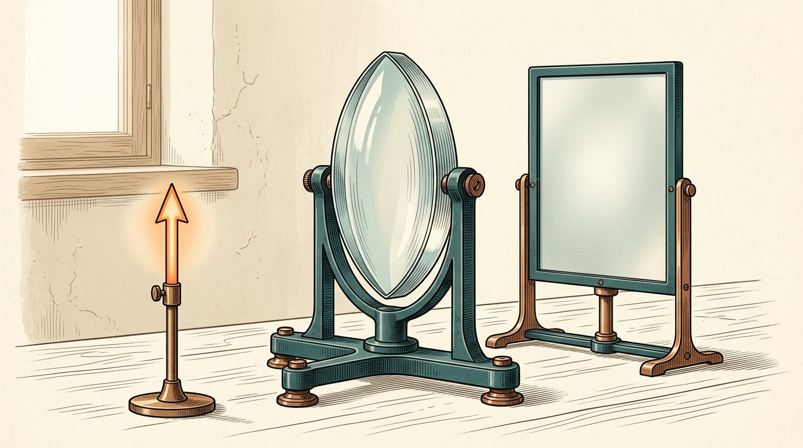

По графику найди среднюю путевую скорость за восемь секунд.
- Дано
- x(0) = 0 m; x(4 s) = x(8 s) = 12 m.
- Найти
- v̄ = ?
- Решение
- Сначала тело проходит 12 м, затем стоит 4 с. Время остановки входит в полное время пути.
- Ответ
- v̄ = s/t = 12/8 = 1.5 m/s

Проверь свои знания и получи персональную
тепловую карту тем по физике.
Получатель запроса: —
Проверка отправляет короткий запрос без данных ученика и расходует квоту выбранной модели.
Если карта уже есть, при включении отправится последняя карта. Только в этой вкладке. Передаются темы, навыки, число ответов и настройки плана, но не имя, пароль или черновики. Каждый запрос может расходовать квоту.
Личный профиль хранится зашифрованным на этом устройстве. Для переноса сохрани резервную копию. Пароль не восстанавливается. Гостевая история и черновики переживают перезагрузку вкладки. Для хранения между посещениями создай профиль или включи сохранение на личном устройстве.
При создании профиля текущие гостевые результаты и черновики переносятся в него.
Здесь появятся карты завершённых диагностик. Начать диагностику →
Сравни число верных ответов и объём выборки. Состав адаптивных задач различается: разница баллов сама по себе не доказывает рост.
Для постоянного журнала создай отдельный профиль класса. Без входа импорт и экспорт тоже доступны. Попроси учеников передать по одной сводке за одинаковый период. Импорт выполняется локально, повторы одного файла не учитываются. Считаются попытки, а не уникальные ученики.
Заверши диагностику, чтобы получить план по своей карте.
Настроить подключение в кабинете →Выбери тему. Сначала разберись в идее и примере, затем попробуй ответить на вопрос без подсказки.
Проследи за двумя лучами и найди изображение собирающей линзы.
Открыть урок о линзе →
Координата показывает, где тело находится относительно выбранного начала отсчёта. На графике координаты от времени смотри не только на высоту точки, но и на наклон участка: горизонтальная линия означает остановку, наклон вниз — движение против оси.
vₓ = (x₂ − x₁)/(t₂ − t₁) на прямолинейном участке графика x(t).
За 3 с координата изменилась с 8 до 2 м. Перемещение −6 м, проекция скорости −6/3 = −2 м/с. Минус показывает направление, а не замедление.
Координата всё время равна 5 м. Значит ли это, что скорость равна 5 м/с?
Нет. Координата не меняется: перемещение за любой интервал равно нулю.
Предсказание: лист тоньше деления шкалы. Поможет ли та же линейка, если сложить листы стопкой?
Сложи 100 одинаковых листов без зазоров и измерь общую толщину. Если получилось 10 мм, на один лист приходится 0,10 мм. Мы не сделали линейку точнее — мы увеличили измеряемую величину.
h = H/N; Δh = ΔH/N
Когда число листов известно точно, погрешность толщины стопки тоже делится на N. При ΔH = 1 мм и N = 100 вклад шкалы в погрешность одного листа составляет 0,01 мм.
Ловушка: зазоры между листами не исчезнут простым делением. Это систематическое смещение, а не случайный разброс.
Предсказание: ширина реки 60 м, лодка идёт поперёк воды со скоростью 3 м/с. Если течение ускорится, изменится ли время переправы?
Выбери две оси: поперёк реки и вдоль неё. Течение направлено только вдоль берега, поэтому лодка достигает противоположного берега за 60/3 = 20 с. На карте берега её путь наклонён.
t = d/v⊥; x = ut
При течении 1 м/с лодку снесёт на 20 м, при 2 м/с — на 40 м. Время одинаково, но точки прибытия разные. Чтобы попасть строго напротив, часть скорости лодки надо направить против течения.
Ловушка: для времени переправы нужна поперечная составляющая, а не модуль полной скорости относительно берега.
Представь два одинаковых по размеру кубика из разных материалов. Более тяжёлый имеет бо́льшую среднюю плотность. Чтобы сравнить тела разного размера, сравнивают не массы, а отношения массы к объёму.
ρ = m/V. Если масса в граммах, а объём в см³, результат будет в г/см³.
Уровень воды в мензурке поднялся с 40 до 65 мл после полного погружения камня. Объём камня 25 см³, а не 65. При массе 75 г его плотность равна 3 г/см³.
Камень раскололи пополам. Уменьшилась ли плотность материала?
Для однородного камня — нет: масса и объём каждого куска уменьшились в одной пропорции.
Снег поддерживает человека и в ботинках, и на лыжах. Меняется не вес человека, а площадь, на которую он давит. Чем меньше нагрузка на каждый квадратный метр, тем меньше сминается снег.
p = F⊥/S
Это среднее давление на площадь контакта. На горизонтальной поверхности для неподвижного человека без других вертикальных нагрузок F⊥ = mg. Берём суммарную площадь обеих опор.
Масса 60 кг, g = 10 Н/кг. Две подошвы занимают 0,04 м², две лыжи — 0,40 м². Найдём давление: вес в обоих случаях 600 Н. В ботинках p = 600/0,04 = 15 000 Па, на лыжах p = 600/0,40 = 1500 Па. Площадь выросла в десять раз — давление уменьшилось во столько же.
А если надеть рюкзак массой 12 кг и остаться на тех же лыжах?
Площадь та же, сила выросла до 720 Н. Теперь p = 720/0,40 = 1800 Па: давление выросло на 20%, как и общая масса.
Одинаковая сила может давать разный результат. Каблук оставляет глубокий след, потому что нагрузка сосредоточена на маленькой площадке. Лыжи распределяют вес по большей площади.
p = F⊥/S. Один паскаль — один ньютон на квадратный метр.
Ящик давит силой 120 Н на площадь 0,04 м². Давление равно 3000 Па. Если положить его на грань площадью 0,08 м², сила не изменится, а давление уменьшится до 1500 Па.
Два одинаковых ящика поставили друг на друга. Что стало с давлением на пол?
Площадь опоры прежняя, а сила удвоилась. Давление стало вдвое больше.
Давление воды внизу больше, чем вверху. Результат — выталкивающая сила, равная весу вытесненной воды.
Что изменится в солёной воде?
При большей плотности жидкости достаточно меньшего вытесненного объёма.
Выбери два состояния и перечисли формы энергии в каждом. Падение уменьшает потенциальную энергию и может увеличивать кинетическую. Если есть потери на трение, часть механической энергии переходит во внутреннюю.
Eₖ = mv²/2; изменение потенциальной энергии у поверхности Земли ΔEₚ = mgΔh.
Мяч массой 0,2 кг падает из покоя с высоты 5 м. При g = 10 м/с² он теряет 10 Дж потенциальной энергии. Без сопротивления воздуха перед ударом это 10 Дж кинетической энергии.
Если мяч после удара не поднялся на прежнюю высоту, исчезла ли энергия?
Нет. При ударе часть энергии пошла на деформацию, нагрев и звук.
Плечо — кратчайшее расстояние от оси до линии действия силы. В равновесии моменты в противоположных направлениях равны.
А если справа тянуть вдоль рычага?
Линия силы пройдёт через ось. Плечо станет нулевым, и уравновесить груз такой силой нельзя.
Сначала спроси: меняется температура или состояние вещества? При нагревании энергия повышает температуру. При плавлении чистого льда в равновесии с водой температура постоянна, но энергия продолжает поступать.
При нагревании Q = cmΔT; при плавлении при температуре плавления Q = λm.
Чтобы нагреть 0,5 кг воды с 20 до 30 °C, нужно 4200 · 0,5 · 10 = 21 000 Дж без учёта потерь. Берём изменение температуры 10 °C, а не конечные 30 °C.
Лёд и вода при 0 °C получают тепло при нормальном давлении. Почему термометр не сразу показывает больше нуля?
Пока тает лёд, теплота идёт на фазовый переход. После полного плавления начнётся нагрев воды.
Предсказание: чай горячее воды. Кажется, теплообмен может лишь сравнять их температуры. А если воду подводить к чаю по частям?
При одном контакте равных масс с одинаковыми удельными теплоёмкостями итог — среднее арифметическое. Но можно сохранить первую нагретую порцию отдельно и лишь затем охладить чай второй холодной порцией.
Σ mc(T − T₀) = 0
После каждого контакта составляй отдельный баланс теплоты. Первая порция воды сохраняет энергию, пока чай остывает дальше. В самом конце смешивают только порции воды, а не всю систему. Именно поэтому возможна смена порядка температур.
Ловушка: второй закон не нарушен. На каждом этапе тепло само переходит от более горячего тела к более холодному.
Проведи мысленную границу вокруг газа. Энергия может войти через нагрев или за счёт внешней работы. Расширяясь и толкая поршень, газ сам отдаёт часть энергии в виде работы.
ΔU = Q − A, где Q — полученная теплота, A — работа, совершённая газом.
Газ получил 300 Дж и совершил работу 120 Дж. Внутренняя энергия выросла на 180 Дж. При том же нагреве в жёстком сосуде работа расширения была бы нулевой.
Можно ли нагреть газ без передачи ему теплоты?
Да. При быстром сжатии в теплоизолированном цилиндре внешняя сила совершает работу над газом, и его внутренняя энергия растёт.
Представь, где заряд может выбрать путь. Если разветвления нет, через элементы проходит один и тот же ток. Если концы резисторов подключены к одной паре узлов, у них одинаковое напряжение, но токи могут различаться.
Для резистора I = U/R. Мощность, которую он получает, P = UI.
К идеальному источнику 6 В параллельно подключены резисторы 3 и 6 Ом. Через них идут 2 и 1 А. Через источник проходит их сумма — 3 А.
Если отключить ветвь с резистором 6 Ом, изменится ли ток через резистор 3 Ом?
Нет, если источник идеальный. Напряжение на оставшемся резисторе всё ещё 6 В. Уменьшится только общий ток.
Предсказание: к двум одинаковым делителям напряжения подключили батарею. Между их средними точками ставят резистор. Нагреется ли он?
В каждой ветви два одинаковых резистора делят напряжение пополам. При батарее 6 В обе средние точки имеют потенциал 3 В относительно минуса. Разность между ними нулевая, значит, через поперечный резистор тока нет.
I = (φ₁ − φ₂)/R
Если изменить сопротивление только одного плеча, симметрия нарушится. Для проверки сначала вычисли потенциалы разомкнутых средних точек: разные значения означают, что после замыкания ток появится.
Ловушка: симметрия рисунка недостаточна. Сопротивления и условия подключения тоже должны быть симметричны.
Нарисуй луч до точки падения и проведи там перпендикуляр к зеркалу — нормаль. Оба угла измеряют от нормали, а не от поверхности. Отражённый луч остаётся по ту же сторону поверхности, что и падающий.
Угол отражения равен углу падения. Угол к поверхности и угол к нормали дают в сумме 90°.
Луч составляет 20° с плоскостью зеркала. Угол падения равен 90° − 20° = 70°. Отражённый луч тоже составляет 70° с нормалью.
Луч падает строго по нормали. Под каким углом он отразится?
Угол отражения 0°. Луч вернётся по той же линии.
На графике скорости торможение выглядит как спуск к нулю. Путь равен площади под графиком: нельзя умножать начальную скорость на всё время, ведь машина замедляется.
s = v₀²/(2|a|)
Эта запись верна при прямолинейном торможении с постоянным ускорением до остановки. Путь за время реакции в неё не входит.
При v₀ = 12 м/с и модуле ускорения 4 м/с² остановка займёт 12/4 = 3 с. Площадь треугольника равна 12·3/2 = 18 м. Если торможение уже началось, двадцати метров хватит.
Что изменится, если водитель начнёт тормозить на секунду позже?
До торможения машина проедет ещё 12 м. Полный путь составит 30 м, хотя тормозной путь останется равным 18 м.
Сначала выбери тело, затем изобрази только силы, действующие на него. Если силы уравновешены, ускорения нет. Тело при этом может двигаться: для сохранения скорости постоянная тяга не нужна.
ΣFₓ = maₓ в инерциальной системе. Направление оси задаёт знаки сил.
Тележку массой 4 кг тянут вправо с силой 14 Н, трение направлено влево и равно 6 Н. Равнодействующая 8 Н вправо. Ускорение 8/4 = 2 м/с².
Тележка едет вправо, а равнодействующая направлена влево. Куда направлено ускорение?
Влево, по равнодействующей сил. Пока скорость направлена вправо, её модуль уменьшается.
Предсказание: человек равномерно падает, затем парашют раскрывается. Поменяет ли скорость направление в первый же миг?
До раскрытия сопротивление воздуха уравновешивает тяжесть. После раскрытия при почти той же скорости сопротивление становится больше. Равнодействующая направлена вверх, но скорость пока направлена вниз.
ma = mg − Fᵣ
Со временем скорость уменьшается, сопротивление тоже падает. Устанавливается другая, меньшая предельная скорость. При положительной оси вниз знак ускорения определяется разностью mg и силы сопротивления.
Ловушка: скорость показывает, куда тело движется, а ускорение — как меняется эта скорость.
Сначала выдели систему. Если внешний импульс вдоль выбранной оси пренебрежимо мал, сумма импульсов по этой оси сохраняется.
Сохранилась ли кинетическая энергия?
Нет: было 9 Дж, стало 6 Дж. Остальные 3 Дж перешли в другие формы энергии при ударе.
Свет передаёт энергию порциями — фотонами. В обычном однофотонном фотоэффекте один электрон получает энергию одного фотона. Сначала нужно преодолеть работу выхода из металла, остаток может стать кинетической энергией.
E = hf; Eₖ,max = hf − Aвых, если hf ≥ Aвых.
Энергия фотона 6 эВ, работа выхода 4 эВ. Электрон может получить до 2 эВ кинетической энергии. Увеличение потока таких фотонов не меняет этот предел.
Если энергии одного фотона не хватает для выхода, поможет ли увеличить число таких фотонов?
В модели однофотонного фотоэффекта — нет. Нужно повысить частоту, а не только интенсивность света.
Проследи, какой объём входит в трубу и выходит из неё за секунду. Если вода нигде не скапливается, через узкое сечение должен пройти тот же объём, что и через широкое.
S₁v₁ = S₂v₂
Берём средние по сечению скорости. Поток стационарный, жидкость несжимаемая, между сечениями нет ответвлений и утечек.
Вода входит со скоростью 0,5 м/с через сечение 12 см². На выходе площадь 3 см². Из сохранения расхода v₂ = 0,5·12/3 = 2 м/с. Отношение площадей можно брать без перевода в м².
Если диаметр уменьшить вдвое, удвоится ли скорость?
Нет. Площадь круглого сечения пропорциональна квадрату диаметра. Она уменьшится вчетверо, поэтому скорость увеличится вчетверо при прежнем расходе.
Медленно двигай поршень в тепловом контакте с термостатом. Газ отдаёт тепло, поэтому работа над ним не обязательно повышает его температуру.
Можно ли применить ту же пропорцию при быстром сжатии?
Не без проверки температуры: при малом теплообмене газ нагревается, и произведение pV растёт.
Сначала спроси, что фиксировано: ток или напряжение? Одна и та же мощность записывается как I²R или U²/R, но условия сравнения разные.
А если эти резисторы соединить последовательно?
Теперь ток одинаков. По формуле I²R на резисторе 6 Ом выделится вдвое большая мощность, чем на 3 Ом.
Для индукции важно не само магнитное поле, а изменение магнитного потока через виток. У неподвижной катушки в постоянном поле поток не меняется, даже если поле сильное.
|ε̄| = N|ΔΦ|/Δt
Здесь Φ — поток через один виток. Все витки сцеплены с одинаковым потоком. Формула даёт модуль средней ЭДС за интервал, а не направление тока.
В катушке 50 витков. За 0,10 с поток через каждый виток падает с 0,004 Вб до нуля. Модуль изменения равен 0,004 Вб, поэтому средняя ЭДС равна 50·0,004/0,10 = 2 В.
А если то же изменение потока займёт 0,20 с?
Числитель прежний, время вдвое больше. Средняя ЭДС уменьшится до 1 В.
Один цикл заканчивается, когда тело вернулось не только в прежнее положение, но и к прежнему направлению движения. Поэтому удобнее отмечать два соседних максимума, а не два любых пересечения нуля.
f = 1/T
Период T измеряют в секундах для повторяющегося движения. Если отсчитываешь N полных циклов, раздели их общую длительность на N.
Максимумы приходятся на 0,2; 0,6 и 1,0 с. Между первым и третьим два цикла, а не три: T = (1,0 − 0,2)/2 = 0,4 с. Частота равна 1/0,4 = 2,5 Гц.
Если увеличить амплитуду идеального пружинного маятника, сдвинутся ли максимумы по времени при той же начальной фазе?
Нет, если выполняется закон Гука и масса не меняется. Вырастет высота пиков, но не расстояние между ними по оси времени.
Пробка на поверхности воды качается около одного места, хотя гребни проходят мимо. Частицы среды колеблются, а вдоль среды распространяется возмущение. Расстояние между соседними гребнями — длина волны.
T = 1/f. За один период волна проходит λ, поэтому v = λf.
Поплавок делает 3 полных колебания за 6 с. Частота 3/6 = 0,5 Гц. Если соседние гребни разделены 4 м, скорость волны 4 · 0,5 = 2 м/с.
Частота источника удвоилась, а скорость волны осталась прежней. Что стало с длиной волны?
Она уменьшилась вдвое: за более короткий период возмущение проходит меньшее расстояние.
Предсказание: складываем выходы двух одинаковых микрофонов перед динамиком. Всегда ли общий сигнал вдвое сильнее?
Волна достигает дальнего микрофона позже. Если разность пути равна длине волны, задержка составляет целый период и максимумы совпадают. При разности пути в половину волны максимум одного сигнала совпадает с минимумом другого.
Δφ = 2πΔx/λ
Для синусоид одинаковой амплитуды и частоты фазовая разность определяет результат сложения. При Δx = λ амплитуда суммы равна 2A, при Δx = λ/2 — нулю. При этом сама звуковая волна в комнате не исчезает.
Ловушка: складываются мгновенные напряжения со знаками, а не их положительные амплитуды.
Луч через оптический центр тонкой линзы не отклоняется. Луч, параллельный главной оси, после собирающей линзы проходит через дальний фокус. Их пересечение даёт изображение точки.
Что будет при перемещении предмета в фокус?
Лучи после линзы параллельны. На конечном расстоянии резкого изображения на экране не будет.
Вытяни палец и посмотри на него сначала одним глазом, потом другим. Палец как будто сдвинулся относительно стены. Так и близкая звезда за полгода смещается на фоне далёких звёзд, когда Земля меняет точку наблюдения.
d(pc) = 1/p(″)
Годичный параллакс p — угол для базы в одну астрономическую единицу. Если измерен полный максимальный сдвиг между противоположными точками орбиты, для расчёта бери его половину.
Полный сдвиг составил 0,40 угловой секунды. Тогда p = 0,20″ и d = 1/0,20 = 5 пк. Чем меньше наблюдаемый угол, тем дальше звезда.
А если звезда вдвое дальше, чему равен полный сдвиг?
Параллакс уменьшится вдвое до 0,10″. Полный сдвиг тоже уменьшится вдвое и составит 0,20″.
Маршрут на четыре недели: три занятия по 45 минут в неделю. Если времени меньше, растяни этап на две недели — важнее решить новую задачу самостоятельно, чем уложиться в календарь.
Начни с диагностики. Выбери одну слабую тему и одну знакомую. Для задачи 2.1 нарисуй траекторию в двух системах отсчёта. Критерий: можешь объяснить, почему рисунки разные, не ссылаясь на ответ.
Читать конспект →Реши задачу 2.2 через энергию, затем измени направление броска. В тетради запиши границы системы и какое взаимодействие отброшено. Проверь единицы и предельный случай нулевой высоты.
Читать конспект →Измерь толщину стопок из 20, 40 и 60 листов. Построй график толщины от числа листов. Найди толщину листа по наклону и сравни с одиночным измерением. Объясни, почему зазоры могут сместить результат.
Читать конспект →Возьми две незнакомые задачи из разных глав. За 45 минут: 5 минут на выбор порядка, 30 на решение, 10 на проверку рисунков, единиц и вывода. Разбор открывай только после сдачи. Через два дня реши ошибочную задачу с чистого листа.
Олимпиадный практикумЖурнал ошибок: номер задачи → где остановился → причина (модель, закон, алгебра или единицы) → один способ проверки. Если не получилось повторно, вернись к конспекту и реши более простую задачу на тот же закон.
Настроить личный планЕщё по темам: Библиотека «Умскул» (на русском) ↗
Перевод и учебная адаптация избранных задач глав 1–5 из Physics Olympiad: Basic to Advanced Exercises ↗ (The Committee of Japan Physics Olympiad, World Scientific). Реши задачу, введи число и сравни свой ход мысли с разбором.
Решено задач:
1. Как из поднимающегося влажного воздуха образуется облако?
С высотой давление падает. Воздух расширяется и охлаждается. При достижении насыщения часть водяного пара конденсируется на мельчайших частицах. Видимое облако состоит из капелек воды или кристаллов льда, а не из самого пара.
2. Почему капли диаметром 3–10 мкм не выпадают сразу дождём?
Капли оседают относительно воздуха, но очень медленно: их вес мал, а сопротивление воздуха существенно. Даже слабый восходящий поток может компенсировать это оседание. Отсутствия силы тяжести здесь нет.
3. Как мелкие облачные капли превращаются в дождь?
Капли растут при конденсации, а также при столкновениях и слиянии. Более крупные капли быстрее оседают относительно воздуха. Когда скорость оседания превышает скорость восходящего потока, они падают вниз относительно земли.
Физика, 9 класс, 2023 год. Попробуй первый тур самостоятельно, затем сверь ход решения с разбором.
Задания и решения двух туров ↗Следующий шаг после школьных задач — теоретический и экспериментальный туры IZhO.
Открыть архив IZhO ↗Авторские тренировочные задания по мотивам экзаменов, не официальные варианты или прогноз оценки.
Начать пробник → · Буклет Haileybury: IGCSE ↗Cambridge · IGCSE Physics 0625 ↗ · KICE · 수능 ↗ · AP Physics 1 ↗ · IB DP Physics ↗
После разминки попробуй задачу из архива. Сначала запиши модель и допущения, затем сравни свой ход решения с опубликованным.
Задачи и решения IPhO ↗Чтобы найти точку старта, выбери класс и весь курс. Перед контрольной открой дополнительные настройки и выбери четверть. Для сравнения через месяц запомни тот же класс и период.
Диагностика →Первую попытку пройди без наставника. После проверки смотри не только на цвет, но и на число ответов по каждому навыку. Одна ошибка — повод решить уточняющую задачу, а не считать тему проваленной.
Диагностика →В плане укажи недели и академические часы: один час равен 45 минутам. Начни с одной темы. Например: 10 минут на теорию, 20 на решение, 10 на новую задачу и 5 на запись ошибки.
План обучения →Прочитай конспект и назови условия применения формулы. Предскажи, что изменится в модели, и только потом сдвинь ползунок. Закрой разбор и реши новую задачу: рисунок → закон → расчёт → проверка единиц.
Конспекты →В кабинете введи свой API-ключ и проверь подключение. Включи авторазбор, если хочешь передавать модели итог каждой новой диагностики. Для отдельной задачи покажи свой первый шаг и попроси найти первую ошибку.
Подключение ИИ-наставника →Через неделю реши незнакомый вариант без подсказок. Сравни попытки за одинаковый период в истории: учитывай объём выборки и сложность задач. Учителю передай сводку, а не ключ или резервную копию профиля.
Моя история →